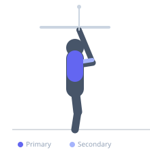

Exercise guide / Kneeling Cable Lat Pulldown
Kneeling Cable Lat Pulldown
The kneeling lat pulldown is performed with the lifter kneeling on the floor in front of a high-pulley cable rather than seated in a machine. The kneeling position eliminates the ability to use the thigh pad for stabilization and increases core anti-extension demand. It trains the lat through a fuller overhead range of motion and allows the torso to shift freely, making it a useful variation for developing overhead pulling strength.
Primary muscles
latissimus dorsi
Secondary muscles
biceps brachii long head
teres major
trapezius lower
Stabilizers
transverse abdominis
internal oblique
Equipment
Cable Machine (High Pulley)


Starting position
- Attach a straight bar or rope to a high-pulley cable. Kneel on both knees directly below or slightly in front of the cable stack, hips over knees.
Setup
- Position the knees hip-width apart. Set an appropriate weight for the kneeling position, which will typically be lighter than a seated pulldown.
Steps
- Step 1: Kneel facing the cable stack with arms extended overhead gripping the attachment.
- Step 2: Brace the core and maintain a neutral spine throughout.
- Step 3: Initiate by depressing the scapulae and pulling the elbows down toward the floor.
- Step 4: Pull until the bar or hands reach chin or upper chest level.
- Step 5: Return under control to full overhead extension without losing spinal alignment.
Coaching cues
- Don't let the cable pull you forward
- Elbows to the floor
- Squeeze the lats hard at the bottom
Breathing
- Exhale as you pull down, inhale as you return to the overhead position.
Range of motion
- Arms fully extended overhead at the start, pulled to upper chest or chin level at the bottom.
Tempo
- 2-1-3-0
Common mistakes
- Allowing the lower back to hyperextend as the cable pulls the torso forward
- Using momentum by rocking the hips
- Not fully extending the arms at the top
Safety
- Keep the core braced throughout to protect the lumbar spine under the overhead cable pull
- Use a lighter weight than your seated pulldown to account for reduced stability
Training
- strength: 6–10 reps
- hypertrophy: 10–15 reps
- strength: 3–4 sets
- hypertrophy: 3–4 sets
- Rest: {'strength': 120, 'hypertrophy': 90}